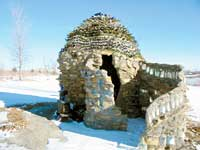
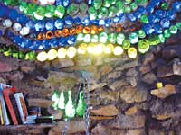
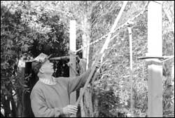
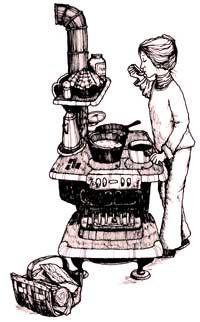

Making homemade meals for a family of five often can be a challenge - especially because I don’t get home from work until 5 p.m. I wish I could say homesteading is my full-time job, but my goal is to be debt-free. To save precious time during the work week, I’ve found it helpful to prepare large portions of meat on Sunday to use during the week. We have our butcher process the meat in double meal portions. This saves on labor, materials and makes it even easier for me to get a head start on the family meals.
I might prepare two large roasts, and just before the family enjoys one for supper, I divide the other roast. Half is returned to the crockpot along with the broth to simmer with noodles, carrots, celery and seasonings. This makes a delicious Monday-night meal. The other half of the roast is placed in a skillet to cook on low with homemade barbecue sauce. This becomes sandwich filling for workday lunches. It also tastes great on a baked potato. In the time it takes to enjoy a meal with my family, I have prepared at least two more meals.
This trick can carry over to steaks and ground beef as well. The only limit is your imagination. Choose a meat that you use in several different meals, and your weekday menu planning is simplified. This strategy makes it easy to offer Sunday goodness any day of the week.
Erica Richwine
Winamac, Indiana
Due to Mother’s inspiration, I built a tiny retreat out of scavenged rocks and recycled bottles on some land that I own in rural Kansas. Your magazine gave me the courage to just start building, even though I am a middle-aged woman with no previous building experience. At my day job I am a strolling violinist. I built the retreat all by myself! The most beautiful part of my project was the roof: It’s made entirely out of recycled wine bottles laid on their sides with the open ends facing out. They are held in place by mortar. The bottles form a beautiful, sparking dome, and make the roof “sing” in the strong Kansas winds.
Maggie Pruitt
Liberty, Missouri
We live in northern Michigan in a passive solar home. We put 17-gallon steel drums filled with water, painted flat black, in the house for thermal mass to store excess heat and even out temperature swings. This worked well enough that I stacked two more water barrels on each side of my free-standing woodstove. They store excess heat energy when I burn a fire and then release heat into the house long after the fire goes out. This summer I’m planning to replace my masonry hearth with a water-barrel hearth, too.
William Lefstad
Mio, Michigan
Our spruce-tip syrup smells like strawberries and tastes like honey. To make it, we collect the new growth from spruce trees in spring. The pale-green tips are best harvested when 1 to 1½ inches long. It is OK if the brown end cap remains on the tip.
Rinse and drain the tips, then place in a large kettle and cover with water. Bring to a boil. Reduce the heat and simmer uncovered about two hours. Strain the liquid and add an equal amount of sugar. At this point, the syrup may be cloudy. Boil until the syrup is thick and amber colored.
Mary HillberRy
Ketchikan, Alaska
Read more from Mary Hillberry in her Firsthand Report, “Wild About Alaska,” August/September 2004.- Mother
Next time a bad weather day has you and the children stuck inside, make up a batch of play dough and turn the little ones loose for some creative squishing and molding. Scavenge through the kitchen for odds and ends to make imprints in the dough. A rolling pin comes in handy as well.
There are many recipes for this activity, some with strawberry scent. Here’s my favorite, used for both my children and my grandchildren.
2 cups flour
1 cup salt
2 tablespoons vegetable oil
2 cups water with several drops of food coloring added
4 teaspoons cream of tartar
Mix ingredients together in a saucepan over medium heat. Stir constantly until mixture tickens. Remove from heat and turn dough onto a plate to cool. Store in a covered container or plastic bag. Finished creations, including beads to string, can be baked in a slow oven until hardened, then painted.
Marti French
Mesa, Arizona
When replacing a fence, we set new posts in concrete. Because of moisture in the posts, bright sunshine and a time delay after putting up the posts, some of them warped slightly. Before installing the rails and upright boards, pulling the posts plumb again became somewhat of a challenge, as I had no block and tackle or come-along. I wrapped a nylon strap (rope or wire would do just as well) around the post tops, and then used a long stick to provide the force to complete what I’ve heard called a Spanish Windlass. Twisting the looped nylon strap with the stick pulled the posts into perfect alignment. By clamping a pipe clamp to one of the posts, I was able to lock the stick in place after twisting it and then nail the upper rails in position.
Arthur Lee
Santa Cruz, California
To “fix” a hole in jeans so it will not continue to unravel, paint the edges of the hole with acrylic paint. When it is dry, the paint will not dissolve in water.
David Medcalf
Lemitar, New Mexico
I’ve been cooking on a wood cookstove for close to 30 years - mostly the same stove, made in 1909, that I bought for $25 at a junkyard in Colorado.
I roasted my first Thanksgiving turkey in that stove, and over the years it has turned out many more birds, loaves of bread, pies, pans of biscuits, etc. - not always to perfection, but everything that came out of that oven seemed to taste extraordinarily good.
I brought it with me when we moved to Oregon, and we installed it in the house we started building in 1980, and finally replaced it when, late last winter, my husband got my (reluctant) consent to buy a new stove - a Waterford Stanley. I loved my old stove and was so used to its ways, but once we fired up the Stanley, I never looked back.
The Stanley can be installed closer to wall surfaces and gives us more floor space than the old stove did.
We don’t have the stove hooked up to a water system, but I keep a couple of kettles going, so there’s always enough hot water for a cup of tea or to wash a few dishes. Coffee cups preheat in the warming oven.
The advantages of a cookstove are myriad. The stove works no matter what the weather or if the power is on or off. The Stanley is set up on legs and one of our cats - Stanli by name (pure coincidence) has claimed the floor space underneath as her own private heat sink, sprawled out in the most abandoned fashion at times.
Any stove takes some getting used to. With a wood cookstove, you have to learn your wood, as well as the stove. I don’t use a lot of soft wood because of the creosote, which brings us to the biggest drawback of wood cookery - cleaning! It’s imperative to keep the outer walls of the oven scraped clean of soot or the oven won’t heat well and evenly. The chimney, like any other, needs to be regularly cleaned both for safety and to keep the stove drawing well. And of course the ash drawer needs to be emptied regularly.
There’s a certain rhythm to each of these chores. Checking the fire, adding wood - not to mention cutting, splitting and carrying all that wood - are more work than turning on a burner, but somehow a wood cookstove is more than merely an appliance. It’s part of what makes a house a home.
Jeanne Marcus
Williams, Oregon
Since we had our antique ‘Glenwood E’ cookstove reconditioned, it has become a shrine in our kitchen. I had used the stove for years without restoring it, but there is no comparison to how it performs when properly reconditioned.
Once started, which is a snap, it comes up to temperature quickly. The stovetop offers an unlimited variety of temperatures, from hot for quick cooking to warm for slow cooking or just keeping things toasty. The shelves and trivets offer another level of warming for breads, rolls or plates.
I soon learned which woods to use and when to add fuel to keep the oven at an even temperature. The oven provides a wonderfully dry, hot heat. We think everything tastes better from the cookstove oven; but pizza is absolutely our favorite. You can easily get the oven very hot, and the dry, even heat always gives us the perfect crust.
Over the years I have collected cast iron utensils to use with the stove, and I am amazed at the ingenuity of some of the pans, broilers, etc. My favorite is a grill for meats that works just like a Jenn-Air brand, great for winter grilling.
My second favorite is the pancake maker that is a large rectangle with a hinge in the middle of the long side. On the left are three circular indentations where you pour the batter to start the cakes. When they are done on that side, you fold the pan over to the right, and the cakes drop out onto the right-hand surface, which is smooth, to finish the cake on the other side. Meanwhile, you can start three more cakes on the left.
I love my cookstove for all the practical reasons - but what’s most important to me is what comes from the heart - warmth and hospitality; it’s something you want to share with all of your friends. There’s just nothing as welcoming as a stoked-up wood-burning cookstove on a cold winter day.
Nancy Bradley
Mansfield Center, Connecticut
I have a ‘Sweetheart’ cookstove that I have had for two years, and I love it. I have always wanted a wood cookstove but found the cost prohibitive. I picked up this one used.
My wife found a few out-of-print books on the Internet about cookstoves. They were not that helpful. Mostly, you need hands-on experience.
The heat is not instantaneous; it takes about 40 minutes to heat up - just long enough to mix up a quick bread. To regulate the temperature for a pot, you just move it around until you find the desired spot. Easy!
The oven is a little trickier. The temperature is regulated by the dampers, the wood size/type, opening/closing the oven door and the position of food in the oven. Now I know that all sounds complicated, but it is not. You quickly learn what works.
I can’t imagine not having this stove in our home. We will take it with us if we ever move. It is definitely the “center” of the house; we congregate around it while I am cooking.
Phil Saxton
Derry, New Hampshire
We bought a 150-year-old vacant farmhouse on 150 acres in Shawville, Quebec. The only heat source in the house was a small box stove in the kitchen and a handful of electric baseboard heaters.
Being frugal, we did not want to heat our home with electricity. We thought an old wood cookstove would be charming and practical in the old kitchen. We found beautiful-looking stoves that were functional for cooking, but very expensive and not efficient for heating a home.
Then we found an article about a ‘Baker’s Choice’ cookstove that claimed to be airtight. The stoves are made by the Mennonites in Ontario. They are very plain, black cast iron with no chrome or fancy edges. The manufacturer’s name is Mealtime Stoves. To our delight, the ‘Baker’s Choice’ stove is everything it was advertised to be. The stove has a burn time of 14 hours. It burns wood very efficiently, leaving nothing but fine ash.
We moved a few years ago and had to leave the cookstove behind. Now we have found the perfect homestead, and we have a new ‘Baker’s Choice’ sitting proudly in our farmhouse kitchen once again. You can see these unique stoves at www.orc.ca/~gerry.
Chris and Julie Miller
Shawville, Quebec
I bought a ‘Kitchen Maid’ wood cookstove not knowing when or how I would ever use it. I hoped eventually to have a place for the stove and luckily, thanks to my good friend Ken, a dream became a reality. It is as if the stove became a cornerstone for everything I have always wanted - land, a cabin and peace of mind.
Ken’s family and mine bought 40 acres in the Ozarks and built a small cabin close to a road with the nickname “Hang-up Hill.” We use this stove just about every time our families go there. Each hunting season, our annual turkey seems to taste more juicy and delicious than the year before.
The stove has a compartment on the right side that heats water along with each meal. It has a small firebox to feed wood into. The stove has to be attended to every 20 to 25 minutes because of the small amount of wood it can handle. Sometimes we use charcoal that lasts longer. We did find corncobs in the firebox that were apparently used to heat the stove years ago.
Larry Esterle
Kansas City, Missouri
Ken Berryman
Holden, Missouri
For years, we heated with an airtight woodstove, but my dream was to have a wood cookstove. New ones are very expensive, but our mailman had an old one in his barn that looked brand new, and he was willing to part with it.
It is a 1936 Sears, Roebuck & Co. ‘Cavalier.’ It has a water reservoir, and I use the hot water for washing clothes and dishes. The cook top is larger than on my gas range. It has a warming oven that is very useful for keeping dinner warm when my husband works late. It is also useful for making yogurt.
A wood cookstove takes a little more work than just turning a knob on the range, but just think of the money you are saving. Splitting the wood a little smaller also is a good workout. Keeping the fire going throughout the night is the hardest part. The trick is to use hard wood, like oak or maple, and pack it tight. Our cookstove warms us from the inside with home-cooked meals and on the outside by keeping us toasty warm.
Kriste Misiak
Posen, Michigan
For more on cookstoves check out “The Art of the Wood Cookstove,”. Thanks to all of you who sent reports on using wood cookstoves. We have posted more on our Web site, www.MotherEarthNews.com. Just click on “Reader Reports.” - Mother
I have fond memories of visiting the older couple who farmed across the street from our house when I was a child. They warmed their home and cooked their meals on an old wood cookstove in the kitchen. I decided at an early age that someday I would learn to cook on such a stove.
Almost 50 years later, I finally have fulfilled that dream. My husband purchased a fine ‘Heartland’ cookstove for me two years ago. It has been the centerpiece of winter meals and Thanksgiving feasts ever since. In addition, it serves as back-up heat in our Colorado mountain home. The water reservoir provides an opportunity to heat water on the side, and the warming oven produces a warm, dark place to dry garden herbs in the fall.
Last Easter, my teenage son cooked a delicious glazed ham and sweet potato dinner for our family. Our youngest daughter plans to have her Girl Scout troop over for a cooking class.
Cooking on a wood cookstove requires skill and attention that is not needed for modern cooking appliances. Because of this added attention, the food somehow comes out tasting better for the effort. My only problem now is that we have three children, and they all want the stove “handed down” to them when the time comes!
Marie B. Zanowick
Denver, Colorado
|
 Illustration courtesy of Storey Publications (www.storey.com), from the book Woodstove Cookery by Jane Cooper, illustrations by Sherry Streeter. |
 |
 |
|
 |
|
|